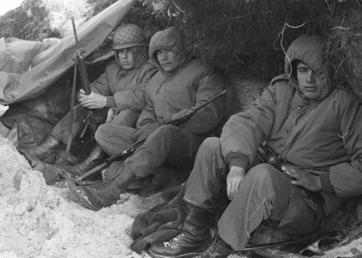

Conflicto entre Argentina y el Reino Unido por la soberanía de las Islas Malvinas.
La Guerra de Malvinas ocurrió por el reclamo histórico de Argentina sobre las Islas Malvinas, ocupadas por el Reino Unido desde 1833. En 1982, la dictadura militar argentina decidió recuperar las islas por la fuerza.
El 2 de abril de 1982 tropas argentinas desembarcaron en las islas. El Reino Unido respondió enviando una flota militar. Hubo combates navales, aéreos y terrestres durante más de dos meses.
Fin de la guerra: El 14 de junio de 1982 Argentina se rindió y el Reino Unido retomó el control de las islas.
En Argentina, cada 2 de abril se conmemora el Día del Veterano y de los Caídos en la Guerra de Malvinas, recordando a quienes participaron del conflicto.
